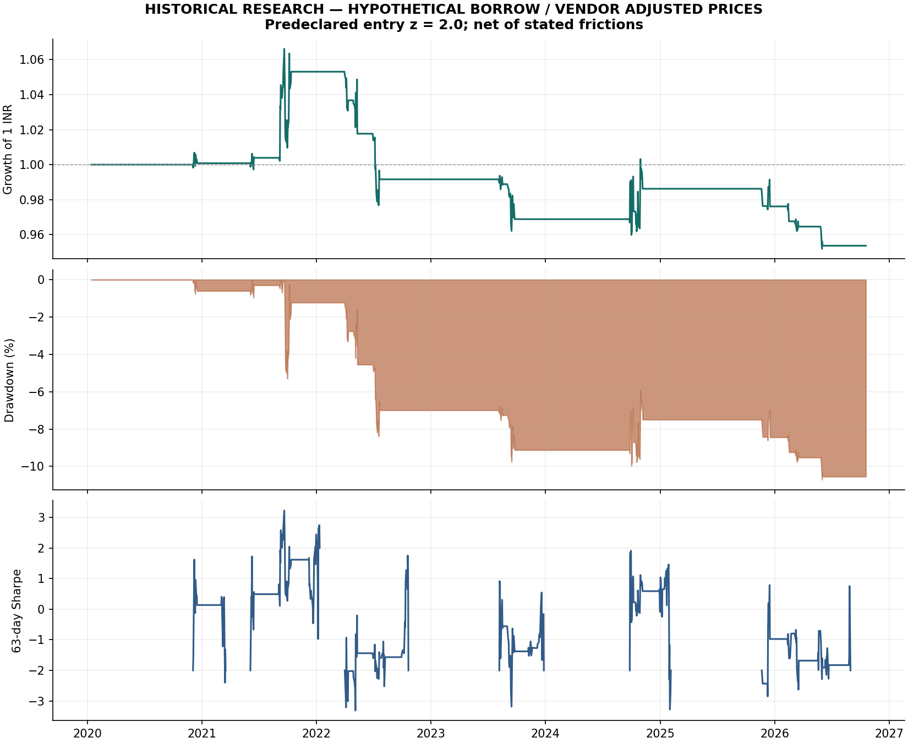

252-day training windows, Engle-Granger tests with Holm correction, Johansen diagnostics and OU half-life screening.
01 / THE FINDING
The baseline did not establish a robust edge.
Across 1,675 out-of-sample observations (2020-01-14 to 2026-10-19), the predeclared entry-z=2 model lost money after its stated costs. Keeping that finding visible is part of the research.
Net CAGR-0.71%
Sharpe / zero hurdle-0.13
Maximum drawdown10.71%
The historical run uses vendor-adjusted prices and assumed borrowing. Historical RBI/CCIL rates and complete distribution events were not verified; the HMM and yield-spread overlays are disabled here and tested separately on synthetic data.

02 / THE DESIGN
Every stage leaves an audit trail.
Causal Kalman hedge ratios. Optional rate-regime sizing uses forward probabilities, never full-period smoothed states.
A signal at close t trades at close t+1. The ledger models drifted holdings, brokerage, slippage, fee allowances and short borrowing.
Prior-volume participation limits, 1,000 block-bootstrap resamples, five recorded threshold/cost variants and 21 automated tests.
03 / PARAMETER RISK
A better-looking threshold is not a new baseline.
| Entry z | CAGR | Sharpe | Max drawdown |
|---|---|---|---|
| 1.5 | 2.70% | 0.50 | 6.76% |
| 2.0 | -0.71% | -0.13 | 10.71% |
| 2.5 | 0.86% | 0.32 | 6.46% |
The 1.5 and 2.5 thresholds are sensitivity experiments. They do not replace the predeclared baseline after inspecting results. The bootstrap Sharpe interval crosses zero. Deflated Sharpe uses five recorded variants, with explicit caveats about correlated trials and serial dependence.
Execution-cost sensitivity
| Slippage / side | CAGR | Sharpe |
|---|---|---|
| 5 bp | -0.46% | -0.08 |
| 10 bp | -0.71% | -0.13 |
| 25 bp | -1.46% | -0.30 |
Costs are stated research assumptions, not verified historical instrument-specific statutory charges or brokerage quotes.
04 / ENGINEERING CHECKS
Designed to expose failure.
- Future-price mutation must not change earlier signals.
- Next-close execution prevents capturing returns before a position exists.
- Publication-aware rate joins reject stale or not-yet-available values.
- Missing held quotes stop the simulation; no invisible price interpolation.
- No verified borrowing permission means no short pair unless explicitly running hypothetical research.
- Cash, costs and drifted holdings reconcile to NAV.
Both the source and the unsuccessful baseline are available for review. No proprietary Alvionx data or employer results are used.
05 / REVIEW THE WORK
Reproduce, inspect, challenge.
Limitations include a fixed modern universe, short REIT histories, vendor adjustment quality, unverified short availability, annualization assumptions and simplified execution. The rate-regime module is a synthetic-validated capability, not a historical performance claim.
Developed with AI coding assistance. This portfolio case demonstrates research and engineering methods, not an investment recommendation.